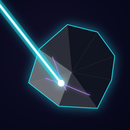
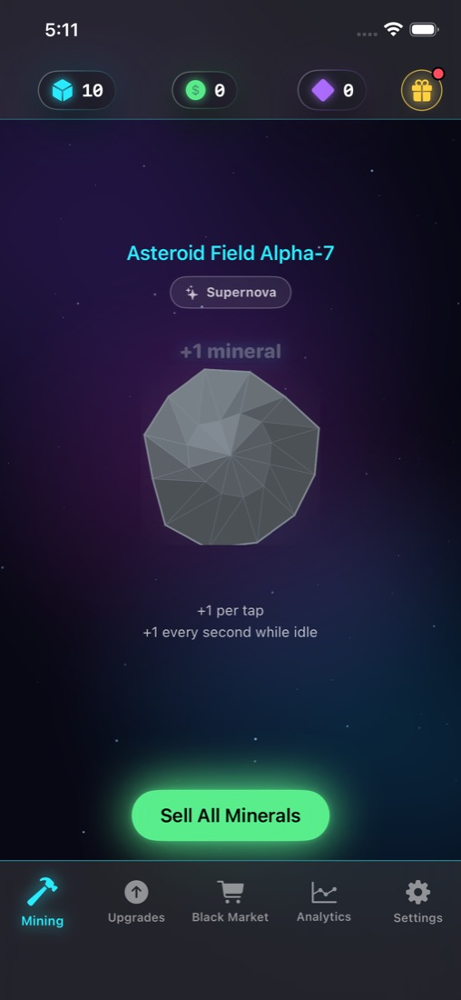
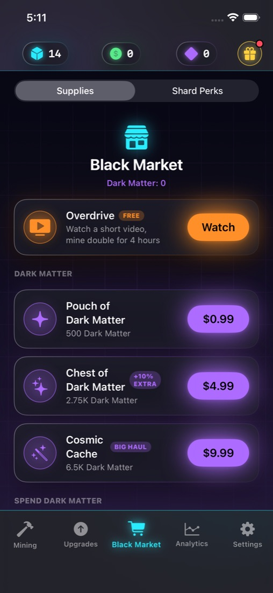
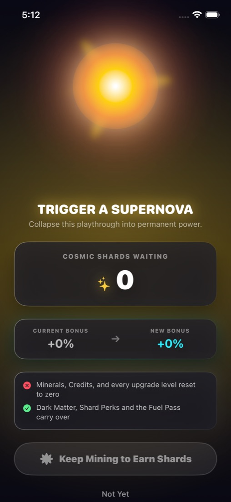

Asteroid Field Alpha-7
SpaceMiner
Strike the rock, sell what breaks off, and pour the credits back into the rig. Your drones keep working after you close the app, so there's always a haul waiting when you come back.
App Store release pending


Rig
Three upgrade tracks
Laser Intensity for harder strikes, Mining Drones for idle output, and Quantum AI for critical hits worth ten times the rock.
Offline
The rig never clocks out
Close the app and come back to a report of everything your drones pulled in while you were gone.
Supernova
Burn it down, come back stronger
Collapse a run into Cosmic Shards and spend them on permanent perks that carry into every run after.
Fair play
No account, no tracking prompt
Ads are optional rewards and an occasional short spot. One purchase, the Infinite Fuel Pass, turns spots off for good.